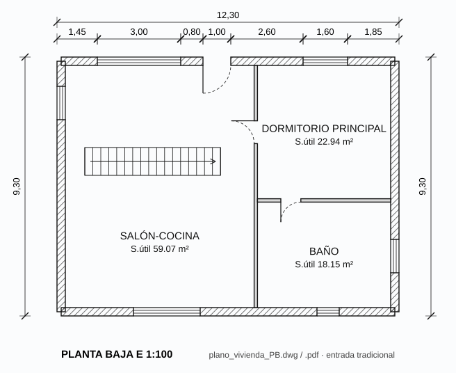

El punto de partida habitual
La mayoría de los encargos no empiezan en BIM: empiezan en un DWG, un PDF escaneado o un plano de papel. HEFESTO convierte ese material en un modelo con tres vías que se pueden combinar: importar el plano como referencia y calcar encima, detectar muros automáticamente con visión artificial (OpenCV) o dejar que un asistente de IA conectado por MCP lea el plano y proponga el modelo por lotes.

Salida: la misma planta como modelo BIM. Pulsa 3D en el visor.
Cómo trabaja la IA con HEFESTO
HEFESTO incluye un servidor MCP (Model Context Protocol). Un asistente como Claude, un agente de escritorio o un modelo local puede consultar el proyecto y proponer cambios, pero nunca escribe directamente: prepara lotes que HEFESTO valida contra su contrato antes de aplicarlos.
Importar la referencia. PDF, PNG o JPEG del plano, que queda guardado en el proyecto.
Leer cada página. El modelo con visión registra hechos (una cota, un espesor, un nivel) como «leído», «derivado» o «sin resolver».
Modelar por lotes. Hasta 100 órdenes por lote, validadas sin tocar el modelo hasta que se aplican.
Vincular la evidencia. Cada muro queda enlazado con el hecho del plano del que sale su medida.
// Lote MCP n.º 2 · «Demo lanzamiento · vivienda unifamiliar» (extracto real) { "action": "createElement", "id": "w_s0", "element": { "type": "wall", "baseLevelId": "lvl_0", "topLevelId": "lvl_1", "p1": {"x": 0, "y": 0, "z": 0}, "p2": {"x": 12, "y": 0, "z": 0}, "thickness": 0.3, "height": 3.0, "isExterior": true } }, { "action": "createOpening", "id": "v_salon", "data": { "hostId": "w_s0", "type": "window", "offset": 2.8, "width": 3.0, "height": 2.2, "sillHeight": 0, "openingType": "corredera_2" } }, // Lote n.º 3 · tipos multicapa y hueco de escalera { "action": "assignType", "id": "w_s0", "typeId": "t_wall_ext" } // HEFESTO valida el lote, enseña los cambios y solo entonces se aplica, con deshacer disponible.
Revisión humana, siempre
La IA acelera la conversión, pero la responsabilidad técnica es del profesional. Los hechos «sin resolver» se quedan como dudas abiertas hasta que alguien las confirma, y cada lote aplicado se puede deshacer. En este curso, la vivienda se modeló por lotes MCP a partir de sus medidas; el plano de la izquierda es su planta equivalente en 2D.
Convierte una planta
Importa un PDF de una planta sencilla como referencia. Pide a tu asistente conectado por MCP que registre las cotas generales como hechos, que marque como «sin resolver» lo que no pueda leer y que prepare un único lote con los muros exteriores. Revisa el lote antes de aplicarlo.